Cougaar IDE
An Integrated Development Environment
for Eclipse
NOTE: Cougaar IDE is
still in the pre-alpha development stage.
Not all functionality is implemented and some implemented features are
not functional.
Select Window->Preferences to bring up the preference menu and then highlight the Cougaar Installations item in the tree view on the left side of the window.
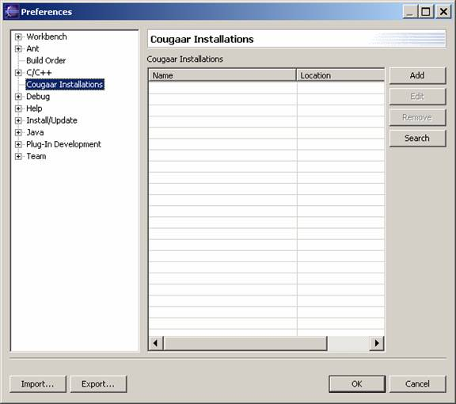
Click the Add button to add a new Cougaar installation and enter the name to use for the installation (can be arbitrary but must be unique). Then use the browse button to select the directory of the Cougaar install path.
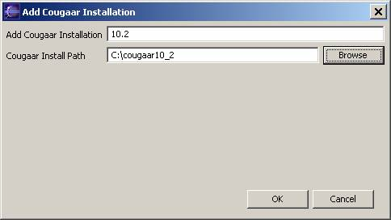
Click OK when complete. The new installation will be added to your install list.
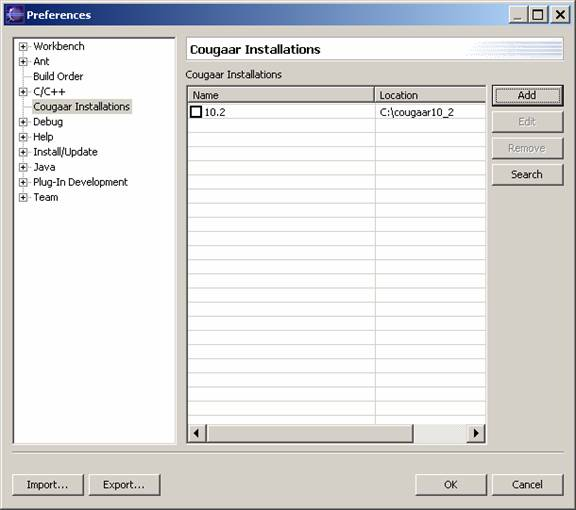
The checkbox to the left of the Cougaar install name will be used to select default installations for new Cougaar projects. This feature is not implemented at this time.
Select File->New->Project from the Eclipse workbench.
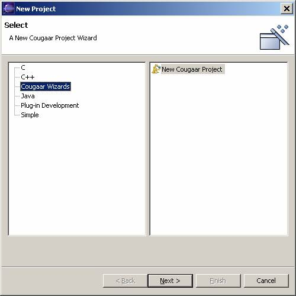
Select the ‘Cougaar Wizards’ option then press ‘Next’. Enter a project name and select the location to store the project. If you already have existing source (that is not already a Eclipse project), you use the project contents option to load existing source and folders. Click Next when Complete.
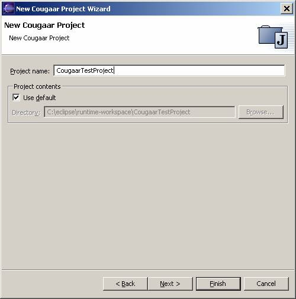
The next series of Tabs are exactly the same as a standard Java project in Eclipse. You do NOT need to set up your Classpath at this time for the standard Cougaar jars. This will be handled by Eclipse. You do, however, need to add any Third party jars not part of the normal Cougaar project. When you have finished setting up these tabs click Next.
The next Screen will allow you to select from the Cougaar installations you have already set up, or Add a new one. This feature is not implemented correctly at this time, so for now, you can just skip this step.
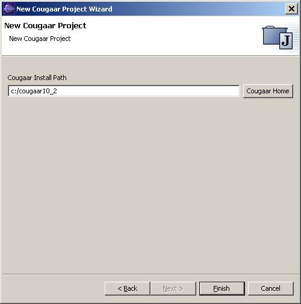
Click Finish when complete.
The new project will be added to your workspace. If you are not already in the Java perspective, switch to it now.
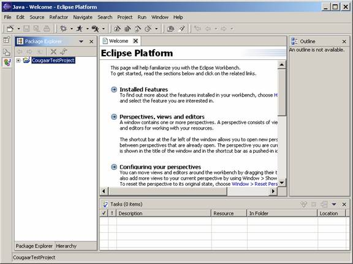
Right click on an existing Cougaar project and select properties from the popup menu.
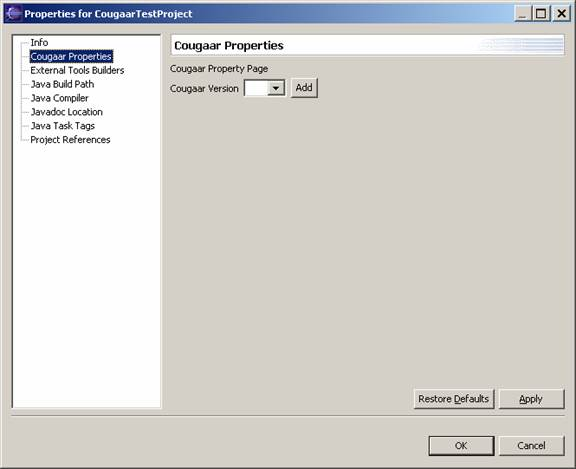
Select Cougaar properties. Then use the drop down list to select the Cougaar installation you want to use for this project.
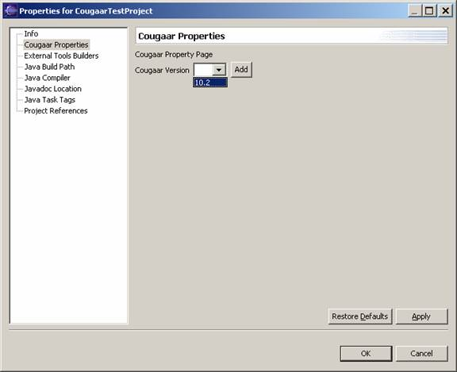
If the installation you want to use is not already set up, you can click the Add button to set up another Cougaar install.
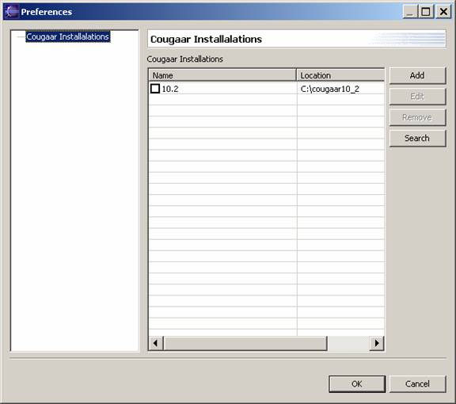
Add a Cougaar install using this dialog the same way you did from the Cougaar Preferences page.
Once you have selected a Cougaar install, click Apply or Ok (either one will save your settings). Selecting Apply or Ok will cause the Cougaar IDE to add the jars from COUGAAR_INSTALL_PATH/sys and COUGAAR_INSTALL_PATH/lib you your required Cougaar Libraries classpath container.
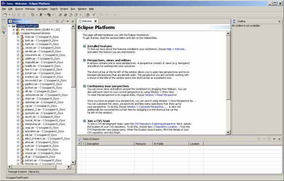
Note that you can have different projects in the same Workspace associated with different Cougaar installations.
Highlight the project you want to run (Must be a Cougaar Project)
Then select the Running Man icon drop down -> Run. Then double Click the Cougaar project in the Tree view to create a new Launch Configuration.
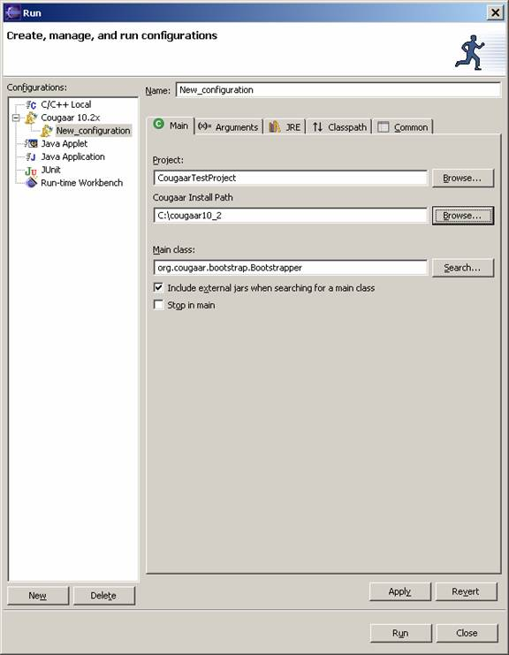
Note: The Cougaar Install Path will be populated
automatically based on you project preferences, but you can chose
a different Cougaar Install path for the Launch configuration. This feature is not fully implemented so you
may have to manually select the Cougaar Install path for the time being.
Click the Arguments Tab
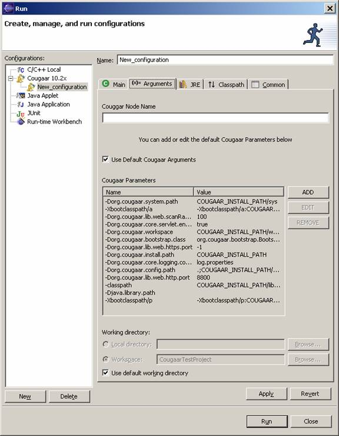
The arguments Tab is pre-populated with Cougaar parameters. Items with COUGAAR_INSTALL_PATH will be converted to the projects Cougaar install path at runtime. You must type in the name of the Cougaar node you want to execute and click ok. If you do not want to use the default Cougaar arguments, you can deselect the checkbox for using the default arguments. Parameters can be added, edited, or removed. If you reselect the default arguments checkbox, changes will be lost. You can also select the default working directory, if the base directory does not have your Cougaar configuration files, you must either change the working directory to the configs directory, or add the configs directory to your org.cougaar.config.path parameter setting.
When you are finished with these tabs you can click Apply to save the settings and then run to execute the Cougaar project. Output will be shown in the console window. You can use the same Launch configuration to debug the Cougaar project as well.